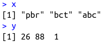
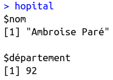
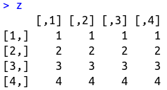
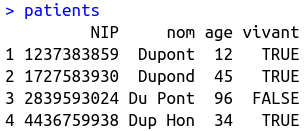

Chapitre 2 : Types d'objets et de données
NGUYEN Dinh-Phong
DIM HuPS, Hôpital Bicêtre, AP-HP
Comme on a pu le voir précédemment, lorsqu'on programme on utilise ce qu'on appelle des variables pour stocker diverses informations, via l'opérateur <-. Ces variables ne sont rien d'autre que des espaces de mémoire dans lequels on peut stocker des objets R, dont les plus fréquemment rencontrés sont :
- les Vectors
- les Lists
- les Matrices
- les Arrays
- les Factors
- les Data Frames
Ces objets représentent différentes manières de stocker des données. Ces dernières peuvent être de différentes natures, regroupées dans ce que l'on appelle des types de données :
- Numeric (les chiffres et nombres) qui regroupe les sous-types suivants :
- Integer (les entiers naturels) :
23L, 5L, 0L - Single et Double (les nombres décimaux) :
23.0, 12.5, 0.2334(par défaut, R convertit les chiffres/nombres au format Double)
- Integer (les entiers naturels) :
- Character (le texte, toujours entre guillemets) :
"Hello", "TRUE", "123", "3 quarts" - Locical (les booléens) :
TRUE,FALSE - Complex (les nombres complexes) :
33 + 3i - +/- Raw (stockage en hexadécimal)
Certains objets ne peuvent stocker que des données du même type, comme les vectors et les matrices, d'autres permettent de stocker des données de plusieurs types différents, comme les lists et les Data Frames. Le tableau suivant résume ces informations pour les objets les plus utilisés en pratique :
| Dimensions | Type unique | Types multiples |
|---|---|---|
| 1-dimension | Vector  |
List  |
| 2-dimensions | Matrix  |
Data Frame  |
x <- c("pbr", "bct", "abc")
Plusieurs fonctions utiles permettent de décrire le contenu d'un vecteur (mais aussi des autres objets) :
print(): affiche le contenu de l'objetis.vector(): affiche TRUE si l'objet est un vector, FALSE sinontypeof(): affiche le type des données contenues dans l'objet (ou la nature de l'objet, si plusieurs types)length(): affiche le nombre d'éléments dans l'objet
print(x)
is.vector(x)
typeof(x)
length(x)
Exercice
Dans la cellule ci-dessous, créez un nouveau vecteur contenant les chiffres 26, 88 et 1 et assignez le à la variable y.
Aidez-vous ensuite des fonctions que l'on vient de voir afin de décrire le contenu de y.
Vous pouvez écrire toutes les commandes dans la même cellule (il suffit d'aller à la ligne entre chaque commande) ou créer une nouvelle cellule pour chaque commande (en cliquant sur le bouton ➕ de la barre de navigation de Jupyter).
# Pour la solution, décommentez la ligne suivante (retirez le "#") :
# source("solutions/02_types_vectors.R", echo=TRUE)
hopital <- list("Ambroise Paré", 92)
print(hopital)
On peut également attribuer un nom aux éléments d'une liste de la manière suivante :
hopital <- list(nom = "Ambroise Paré", département = 92)
print(hopital)
NB : les curieu·x·ses qui auront essayé la fonction is.vector() sur une liste se demanderont pourquoi la console affiche TRUE. Sans rentrer dans les détails, R considère en effet les listes comme des vecteurs spéciaux.
# Ici, on précise nrow = 4 pour que R force la matrice à avoir 4 rangées
z <- matrix(c(1, 2, 3, 4, 1, 2, 3, 4, 1, 2, 3, 4, 1, 2, 3, 4), nrow = 4)
print(z)
4. Data Frames
Les Data Frames permettent de stocker des données bi-dimensionnelles (ou "rectangulaires") de différents types. C'est l'objet qui se rapproche le plus d'une feuille Excel, et donc ce que l'on va utiliser le plus souvent en analyse de données classique. On peut assimiler un Data Frame à une liste de vecteurs de même longueur, et on le crée avec la fonction data.frame() comme suit :
patients <- data.frame(
NIP = c("1237383859", "1727583930", "2839593024", "4436759938"),
nom = c("Dupont", "Dupond", "Du Pont", "Dup Hon"),
age = c(12, 45, 96, 34),
vivant = c(TRUE, TRUE, FALSE, TRUE),
stringsAsFactors = FALSE
)
print(patients)
On remarquera deux particularités dans la commande ci-dessus :
- La syntaxe : on aurait pu taper la commande qui a servi à créer le Data Frame
patientssur une seule ligne, mais on se rend bien compte que ça serait vite devenu illisible. Moyennant le respect de certaines règles, chacun·e est libre d'écrire du code comme il lui plait, mais il existe des conventions qui permettent d'harmoniser les pratiques et favoriser la compréhension de la lecture du code. Ici par exemple, on retourne à la ligne et on incrémente d'unTabà chaque nouvel argument de la fonction. stringsAsFactors = FALSE: cet argument impose au Data Frame de laisser les colonnes de typecharactertelles quelles, au lieu de les convertir enFactors. Nous verrons plus tard ce que cela implique, mais pour l'instant considérons qu'il faille inclurestringsAsFactors= FALSEà chaque fois que l'on crée un Data Frame.
Exercice
Complétez la cellule ci-dessous pour créer un Data Frame à partir des vecteurs déjà créés.
nda <- c("290022559", "290499339", "289449003")
nom <- c("Martin", "Marre Tain", "Mahrtain")
duree_sejour <- c(34, 2, 85)
simpa <- data.frame(
# Compléter ce qui manque ici entre les parenthèses
)
print(simpa)
# Pour la solution, décommentez la ligne suivante (retirez le "#") :
# source("solutions/02_types_dataframes.R", echo=TRUE)
Retour au sommaire
Cours précédent : Introduction et premiers pas
Cours suivant : Opérations et manipulations de vecteurs